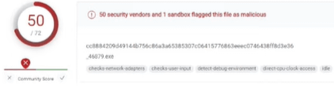
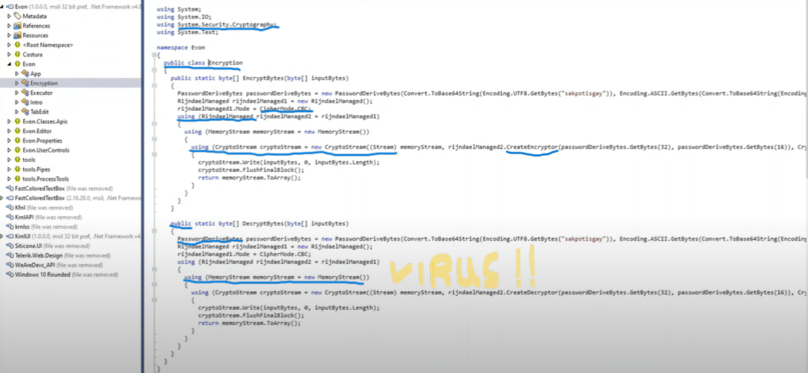

The Evon Virus, Debunked
Evon has many roumors, most of them originating from bullshit reddit posts like this - This documentation page is dedicated to debunking that specific one, although most have flaws similar to identical to this one.
Read this if you're confused
Some baseline knowledge may be required to understand any of this debunked page.
Here's some of it: What is a False Positive, Why do Executors trigger False Positives
For other terms, if you aren't a programmer, you may need to look things up.
Claim 1: VirusTotal Scan
Claim
(1) - Virus Total Scan
Let's scan Evon through Virus Total and see what happens.
50 antiviruses have detected it, looks promising enough to discourage you. However, some of you Evon stans may say these are "false-positives"

Debunked
Take any of our competition & throw it in VirusTotal. It will flag the same amount if not more.
Many AVs flagging the same thing
Many AVs flagging the same thing means that whatever they're flagging is likely present, not that something's malicious.
If many AVs flag a DLL Injector for DLL Injection, that means that DLL Injector does inject DLLs, not that it's malicious.
Flag Descriptions
What could be relevant is what evon would be flagged as, which is of course not shown as that debunks their own point. If it said something like Discord.Stealer+[some hex number] on multiple AV engines, then it'd be suspicious - This is 100% not.
Additionally, any competent antivirus will flag DLL injection as possibly malicious, as it can be used in malicious ways; say a random program like Cracked Minecraft were to inject a DLL into your browser; it could read your passwords & whatnot, as it can read your browser's memory.
Executors need DLL injection, not to read your passwords or whatever, but rather to modify Roblox's memory to run your scripts.
Claim 2: DNSpy'ed Encryption
Claim
(2) - File Analysis
Now the real scan, this is a file "analysis" of Evon's code to see if there is anything sketchy.

Debunked
Crypto
Anywhere, in this section and beyond, Crypto referrs to Cryptography, not Cryptocurrencies. Programmers outside of smart-contract languages rarely ever refer to Cryptocurrencies as Crypto in their code.
Microsoft's C# APIs also rarely, if ever do this.
If I'm referring to Cryptocurrencies, I will be explicitly laying that out. From here on out, Crypto = Cryptography.
The author of the original post clearly does not understand that developers rarely are referring to Cryptography with the word Crypto.
First off, this code has long been removed from Evon as it wasn't in use for a while, and was just sitting there as "Dead Code". You can check this yourself using DNSpy, the same tool they used.
Let's explain what this code does exactly, one highlight at a time.
using System.Security.Cryptography;-> Loads the System Cryptography Libraries, for things like Encryption, Hashing, Message Signing, etc...public class Encryption-> Creates a "Class" namedEncryption- What's apparently "suspicious" about this I have no fucking cluerinjadaelManaged1.Mode = CipherMode.CBC;-> Sets the Obsolete Rinjadel Encryption's CipherMode to Cipher Block Chaining (CBC). Yet again, nothing suspicious here.using (RinjadaelManagedhow is this suspicious exactly??? like legitimately, what about this (seeusing (var symmetricKey = new RijndaelManaged()); very similar internal functionality to this line) is suspicious???using (CryptoStream cryptoStream = new CryptoStream((Stream)-> Creates a new Cryptography Stream Object. Basically just a place where cryptographic data can be written to for future use.rinjadaelManaged2.CreateEncryptor-> You're saying a class for encryption isn't gonna create an encryption class?public-> Congrats, you highlighted a keyword that refers to exposing a function so other code can call it. Why didn't you highlight it in thepublic static byte[] EncryptBytes(byte[] inputByes)above it?PasswordDeriveBytes-> This is a class used for password generators that generate random cryptographically secure passwords, which can be used as keys. This is the same as the Password Generation function in your Password Manager.using (MemoryStream memoryStream = new MemoryStream())-> Creates a place we can write data later. Every program, cryptography or not, at some level of abstraction, will do this.
In addition, the claim Now this is REALLY SKETCHY.. To me it looks like a crypto mining loop, that also has a password deriver (logger) in it, basically Evon gets your passwords too! under the image is fundamentally wrong. There is no real "loop", and a password derivation function creates a new, random password, derived from a seed. Unless Windows somehow randomly generated a seed that managed to collide with your password, which has a chance so astronomically low that the chance of you getting hit by lightning 12 times & surviving is higher, this will not result in your password.
Claim 3: Signature Analysis
Claim
Let's analyze Evon's signatures, and what it does in the background.
Yara detected RedLine Stealer
Multi AV Scanner detection for submitted file
Malicious sample detected (through community Yara rule)
Antivirus detection for dropped file
Multi AV Scanner detection for dropped file
Snort IDS alert for network traffic
Writes to foreign memory regions
Tries to steal Crypto Currency Wallets
Connects to many ports of the same IP (likely port scanning)
Machine Learning detection for sample
Injects a PE file into a foreign processes
Queries sensitive video device information (via WMI, Win32_VideoController, often done to detect virtual machines)
Queries sensitive disk information (via WMI, Win32_DiskDrive, often done to detect virtual machines)
Machine Learning detection for dropped file
C2 URLs / IPs found in malware configuration
Hides that the sample has been downloaded from the Internet (zone.identifier)
Tries to harvest and steal browser information (history, cookies, cache)
Notes
Cannot Reproduce some of these
I only managed to reproduce some of these flags with a fake evon download from the ads found during the download process. I will only be responding to the ones that can show if you're running an analysis on the real evon.
Please, do yourself a favour, and watch this video to learn how to download it.
Debunked
Debunked Claims I can reproduce
Multi AV Scanner detection for submitted file
Malicious sample detected (through community Yara rule)
Antivirus detection for dropped file
Multi AV Scanner detection for dropped file
Machine Learning detection for dropped file3
All of these claims are equivalent; See this.
Writes to foreign memory regions
Executors need to write to Roblox's memory to function. I don't know what more you expect
Injects a PE file into a foreign processes
DLL Injection. See this.
Queries sensitive video device information (via WMI, Win32_VideoController, often done to detect virtual machines)
Even Browsers like Firefox, Chrome, Edge, Internet Explorer, etc... all will do this. Win32_VideoController is required to render almost any graphical contents.
Note
Keep in mind, Evon literally embeds a Chrome-based Browser to support Monaco.
Queries sensitive disk information (via WMI, Win32_DiskDrive, often done to detect virtual machines)
If Evon wants to check that you have enough disk space before installing/updating, it's gonna do this.
Some of the claims I couldn't reproduce Debunked
Some of these are possible to flag in other executors, and might have been in some Evon versions. Those that are possible to have been a thing in some evon versions & are possible in other legitimate executors are debunked here.
Tries to steal Crypto Currency Wallets
I think you're confusing Cryptography & Cryptocurrency Wallets in the resulting analysis. See this.
Hides that the sample has been downloaded from the Internet (zone.identifier)
What is zone.identifier, and what is ADS?
StackOverflow: What is zone.identifier (Alternate Data Streams)
- Many programs, last I checked including Firefox, will not write
zone.identifier, which will flag this. - Even if Evon was deliberately hiding that the sample was downloaded from the internet, the only scenario where this would affect anything is if you rely on early-2000s software for security, which heavily relied on this during scanning, in which case you're fucked anyways, evon or not - AV software that old will introduce vulnerabilities if it can even run on modern software (it can't).
Connects to many ports of the same IP (likely port scanning)
Many legitimate programs will have this flag, in some way, shape or form. Any competent reverse-engineering toolkit will note this as Informational, not a Suspicious/Malicious flag.
Note
I'm not saying malware doesn't port scan, I'm saying non-malicious software can trigger port-scanning-alike notifications
Claim 4: How do I remove the Evon "Virus"
Claim
These are 3 Ways
- You can Download Kaspersky or Bitdefender And do a Full/System scan.---After deleting any detections scan with these TDSSKiller,HitmanPro---
- Restore Point, Type Restore Point in windows search bar—>Open create a Restore point—> click System Restore—> And pick one Before the time you installed evon.
- Factory Reset Your Pc
-- Evon may modify Edge files, so on edge go to edge://settings/privacy -> next to clear browsing data click Choose what to clear -> select all time -> check everything then press clear now
Debunked
Here, I will be critiquing both the claims of Evon being a virus, aswell as the suggested methods of cleaning up malware, as to show complete & utter incompetence.
Keep in mind, this removal post was made by a Moderator of r/robloxhackers, indicating even the mods are completely incompetent
You can Download Kaspersky or Bitdefender And do a Full/System scan.
Kaspersky is a Russian4 "Security" company that's more likely to infect your device with russian state-owned malware than clean up actual malware, let alone clean up a false-positive.
Bitdefender is a legitimate antivirus company, however like any antivirus, it is fundamentally flawed when it comes to flagging executors & cleaning up nonexistent damage.
---After deleting any detections scan with these TDSSKiller,HitmanPro---
TDSSKiller is owned by Kaspersky (first result for TDSSKiller on DDG is Kaspersky5), see above for issues caused by that4.
Just like Bitdefender, HitmanPro itself is not a problematic piece of Software to the extent of my knowledge, however it yet again cannot remove nonexistent malware.
Restore Point, Type Restore Point in windows search bar—>Open create a Restore point—> click System Restore—> And pick one Before the time you installed evon.
If Evon, theoretically, was malware, and was as sophisticated as these people tend to claim, it would infect system restore points.
Note, it does not do this, as it isn't malware, however if it was malware as sophisticated as this subreddit loves to claim, it would.
Factory Reset Your Pc
This is the only actual legitimate malware removal method, however it is redundant to factory reset your PC for a false-positive attacked by people who have no clue what the fuck they're talking about & don't provide any evidence.
Evon may modify Edge files, so on edge go to edge://settings/privacy -> next to clear browsing data click Choose what to clear -> select all time -> check everything then press clear now
If any malware were to modify Edge's files, the first attack vector would be the Edge executable. This wouldn't repair a theoretically infected Edge executable.
Claim 5: Safe, Reliable & Powerful Exploits
Claim & Debunk
OP lists some executors that are, just like evon, safe, and tries to get people to switch to them.
However, 3 of the 6 executors they list have their DLLs developed by the same group of people that develop Evon's DLL.
Theoretically, if Evon was a virus, by this subreddit's logic, said other executors would be too, as the internals of the DLLs are based on the same base DLL codebase.
In addition, any of the false allegations in relation to Evon could be made to all of those executors.
Claim 6: Their Conclusion
Evon is a virus, do not trust anything that Sakpot uploads.
Evon is not a virus, as outlined above.
Sakpot is a trustworthy creator.
his script site is also adware and popups that can get you a Potentially Unwanted Program :D
It is true that Sakpot's script site has popups, and if you aren't careful you can get malware from them, however Sakpot shows how to avoid these on his own channel6.
Ad monetization rates for less-intrusive methods of monetization are horrible, regardless of what site you are, and Sakpot is no exception. Therefor, Sakpot's site has more intrusive pop-up ads as to avoid having an unprofitable site.
If I were to rank Evon as a virus, I would rank it as "Severe"
Nobody gives half a fuck as to what you want to rate it, as you are not a professional. You are incompetent.
because not only does it have a silent crypto miner that will slowly destroy your computer components
- As shown above, you tend to confuse cryptography with cryptocurrencies.
- It has been proven that mined-on GPUs don't have a significant deterioration of the hardware. If you have a cryptominer running, it will slow down your GPU while it's running, however the hardware won't deteriorate.7
it also has a information deriver (logger), on top of that it also modifies Edge Browser files, I also found out that it has keystroke logger, and some other sketchy shit.
Source: You made it the fuck up.
Evon's code is basically skidded and contains malware strings.
Source: You keep making shit the fuck up.
Evon has been classified as "RedLine.Exe"
Did I say you like to make shit the fuck up?
RedLine is probably the most dangerous basic malware out there;
Info about this malware:
This malware harvests information from browsers such as saved credentials, autocomplete data, and credit card information. A system inventory is also taken when running on a target machine, to include details such as the username, location data, hardware configuration, and information regarding installed security software. More recent versions of RedLine added the ability to steal cryptocurrency. FTP and IM clients are also apparently targeted by this family, and this malware has the ability to upload and download files, execute commands, and periodically send back information about the infected computer.
This is true: Redline is a very dangerous piece of malware89 (see this if you have installed a fake evon that contains Redline) - However, you have no evidence that Evon is actually Redline
The only official Evon Downloads are evon.cc and sakpot.com/evon-executor.
Any other download is fake & could be malicious.
Tips:
- Do not download random exploits on the internet, take note that executors that have "custom dll, keyless, synapse cracked" HAVE A VERY HIGH CHANCE OF BEING A VIRUS, I AM NOT SAYING IT IS A VIRUS, BUT THEY HAVE A VERY HIGH CHANCE OF BEING A VIRUS.
This is (partially) a legitimate tip; "synapse cracked" does not exist.
However, Evon is an actual keyless executor using a DLL developed by a trustworthy developement team with years of experience, and makes it's money off of FileDM instead of Linkvertise Keys, meaning this doesn't apply to Evon.
- Also, please don't download files from fishy youtube videos with little to no views and look like they are botted/spam, especially do not download files from those videos that contain "File Password: 4 digit number" in description.
This is also a legitimate tip, however Evon does neither of these. Sakpot is one of the most popular & trustworthy Roblox Exploiting Youtubers, and Evon does not have an encrypted/password-protected Zip file to execute.
- Finally, make sure to use the official executor link when downloading your preferred cheat client (for example instead of krnl.vip (Yes I know krnl.vip is not phishing or adware or malware or cookie/IP logging site, this is just example) use krnl.place or wearedevs.net)
krnl.vip is not an official KRNL website and 100% could contain malware. krnl.place & krnl.ca are the only official KRNL domains. This claim is literally wrong as-is, and isn't even related to Evon.
Summary
The good
There are 2 good things about this post:
- It shows as an example for how not to write an "executor exposed" post, as it outlines 0 evidence & shows fuck-all.
- OP made 2 decent points towards the end, however those do not apply to Evon & are not critiques of Evon
The bad
The "Reverse Engineering" process used is fundamentally flawed & does not account for the basics of any executor's functionality & basic knowledge of how Antiviruses function.
It also fails to account for a class named Encryption using Cryptography libraries, and claims that's a Cryptocurrency wallet stealer.
Every single claim that is believable within a reasonable doubt on it's own falls flat on it's face after any amount of research.
Sidenote
It's clear, based on the image they provided's dnspy's file history, that they decompiled any C#-based executor they could fine, until they found one with anything mentioning the word Crypto in some way shape or form.
This clown's intention was to shit on the first executor they could find that had anything they could leech onto, for some sweet sweet internet attention.
-
The person posting didn't even provide a high-enough-resolution image to read anything in it. ↩
-
The "proof" image, as blurry & unreadable as it is, even when upscaled using ML, has less points in it than this guy made. ↩
-
It is worth noting, in addition to the above, any Machine-Learning First AV that isn't trained on a large amount of executors as a prominent part of its dataset, will have more false positives than anything else for Executors. That's just how it is. ↩
-
Wikipedia: Kaspersky; see
HeadquartersandKaspersky has faced controversy over allegations that it has engaged with the Russian Federal Security Service (FSB)↩↩ -
DuckDuckGo: TDSSKiller, Kaspersky Support: TDSSKiller tool for detecting and removing rootkits and bootkits ↩
-
Linus Tech Tips: "DON'T Buy a Used Mining GPU! - $h!t Manufacturers Say" ↩